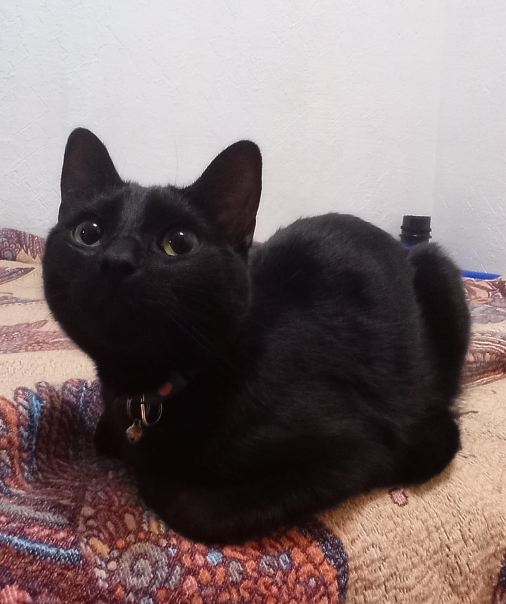

Nanami
Gatita doméstica sin preocupaciones ni obligaciones


Nanami's Favs
Su fino paladar felino disfruta de:
- Hígado de pollo
- Croquetas
- Camarones
Sus pasatiempos preferidos son:
- Dormir
- Cazar moscas
- Morder cartón
- Correr por toda la casa
- Echarse a tomar el sol en la azotea
¡Psst!
Si quieres ver videos de gatitos, da click aquí
¡Queremos conocer a tu michi!
¿Tu gatito es cachorro o adulto?
¿Qué tipo de gato es el tuyo?